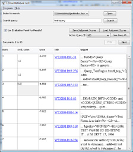
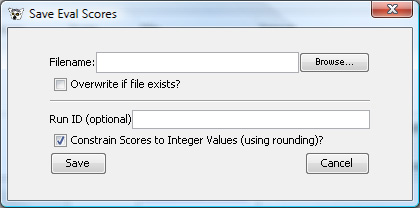

By checking the "Use Evaluation Panel for Results?" checkbox when you have
query results, you can use the evaluation jugment scoring display to create
relevance judgements for queries and document sets. A sample view of the display
is shown below:

When the panel is displayed, you have the option to use the "Load Judgment Scores" button to load in previously saved qrel judgments (that are compatible with the standardized TRECEval format). Once loaded, you can select the query ID to operate on via the drop-down list under the load button. If no queries are loaded, you can create a new query ID to work with via the "New Query ID" button.
When issuing a query while having a query ID selected, any previously loaded judgment scores that match document IDs in the result set will have their judgment scores set. To edit or add a new score to a document, click in the "Eval. Score" cell for that result item and enter the score. The edit box will accept floating point numbers only (if you require the use of integer relevance judgments, when you save the file, you will have the option to save all scores as integers instead of floating point numbers).
If you modify any judgmnent scores for a query ID, the "Save Judgment Scores" button will appear to allow you to save the current set of scores at any given time. If you move to a newly selected query ID (or choose to not use one) and have modified scores, the system will prompt you to commit any changes to modified scores for the current query ID.
When you are ready to save your judgment scores, press the Save button, and the Save Dialog will
appear (as shown below):

Enter (or browse) for the filename you wish to save to. By default, the system will append to any existing file (overwriting any matching query IDs that already exist that you have loaded), but you can also choose to overwrite the file entirely.
You also have the option of choosing a RunID for the batch, and the option to save the scores as integerial values (on by default) as opposed to floating point numeric values.